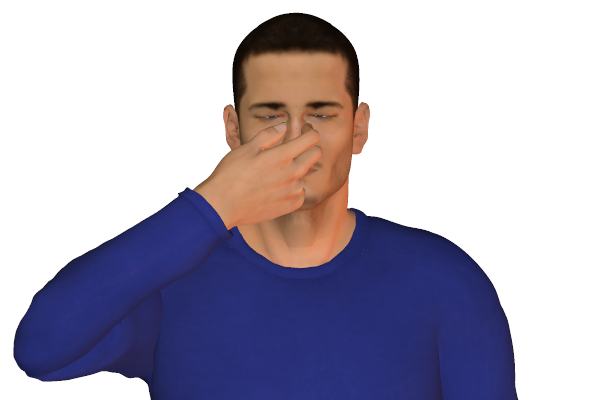
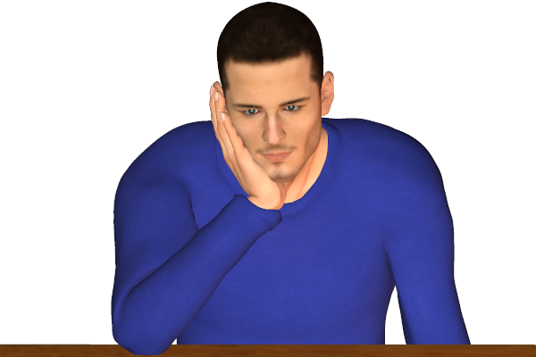
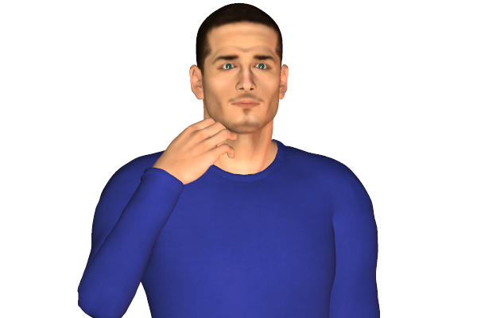

Bookmark added
-
nail biting
 frustration, suppressionIt is a habit of self comfort. It can also indicate nervousness or stress due to frustration or fear.
frustration, suppressionIt is a habit of self comfort. It can also indicate nervousness or stress due to frustration or fear. -
hand(s) clamped over mouth
 suppression, shockThis gesture mostly indicates the person is in shock or if he is trying to suppress any reaction.
suppression, shockThis gesture mostly indicates the person is in shock or if he is trying to suppress any reaction. -
touching nose, while speakinglying or exaggerationThis gesture is usually done when someone is trying to hide something or is lying.
-
scratching nose, while speakinglying or exaggerationThis gesture usually is a warning that the person is lying. It could also be that he has an itchy nose.
-
pinching or rubbing nose, while listening
 thoughtfulness, suppressing commentIn many instances this gesture could be a signal of holding oneself back from commenting or responding.
thoughtfulness, suppressing commentIn many instances this gesture could be a signal of holding oneself back from commenting or responding. -
picking noseday-dreaming, inattentive, socially disconnected, stressUsually a private affair the person subjects to this kind of gesture when he feels socially disconnected or under stress.
-
pinching bridge of nosenegative evaluationThis is kind of a gesture is usually understood as a negative gesture.
-
hands clamped on ears
 rejection of or resistance to somethingA gesture where the person is reluctant to hear or is rejecting to the whole situation. It indicates that the other views to the person are not needed or would be ignored.
rejection of or resistance to somethingA gesture where the person is reluctant to hear or is rejecting to the whole situation. It indicates that the other views to the person are not needed or would be ignored. -
ear tuggingindecision, self-comfortingIt can signal that the person is indecisive about something and is thinking about it. It is also a gesture of self comfort.
-
hands clasping head
 calamityHands clasping the head indicates the person is in a state of shock. The gesture indicates protection.
calamityHands clasping the head indicates the person is in a state of shock. The gesture indicates protection. -
hand stroking chinthoughtfulnessThis gesture indicates the person is in the process of thinking.
-
hand supporting chin or side of faceevaluation, tiredness or boredomPeople displaying this signal are usually in a state of boredom or are assessing the situation.
-
chin resting on thumb, index finger pointing up against face
 evaluationThis signal indicates the person is deeply evaluating.
evaluationThis signal indicates the person is deeply evaluating. -
neck scratchingdoubt, disbeliefThis signal usually indicates the person is doubting or distrusting what is being said.
-
running hands through hair
 flirting, or vexation, exasperationThis sign is commonly associated with flirting. But can also be done when a person is exasperated or frustrated.
flirting, or vexation, exasperationThis sign is commonly associated with flirting. But can also be done when a person is exasperated or frustrated.